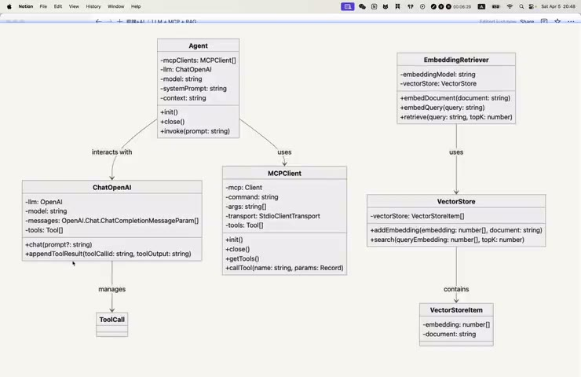

原视频 · 在线回看
点击后联网加载 B 站播放器；本地不下载整段视频。

原视频 · 在线回看
点击后联网加载 B 站播放器；本地不下载整段视频。
来源：LLM+MCP+RAG实战——从0无框架实现极简Agent客户端
UP 主：MiuMiu8802 · 1 小时 14 分 45 秒 · 深度阅读
链接：https://www.bilibili.com/video/BV1dcRqYuECf/
我们想做一个很小的程序：电脑里保存着几份虚构人物资料，输入一个名字，程序找出对应资料，让模型据此创作故事，最后把基本信息和故事保存到 Markdown 文件。这个任务不大，却包含了一个 Agent 应用最重要的几次交接：从哪里取得资料，怎样把资料交给模型，模型怎样提出写文件的请求，以及文件到底由谁写入。
沿着这件事来理解，几个常见名词就有了明确位置。RAG 负责从现有资料中找出相关内容，模型根据资料和任务组织文本、选择下一步，MCP 工具负责提供实际的文件或网络操作。客户端把这些部分连接起来，并把执行结果送回模型，让它知道刚才的动作究竟有没有完成。
这里用 TypeScript 和基础 SDK 手写一个教学原型，不依赖完整的 Agent 框架。这样可以看清请求、消息历史和工具调用之间的关系。它从普通模型请求开始，逐步加入工具循环，最后加入简化检索；“无框架”也不意味着没有第三方依赖，模型与 MCP 的基础协议仍通过相应 SDK 接入。
“增强语言模型”这个想法把模型与检索、工具和记忆放在一起。模型不必独自承担所有事情：它可以取得新资料，调用外部能力，并使用应用保存的信息。这也是这次实现引用的基础构件。Anthropic：Building effective agents
程序分成五个主要部分。ChatOpenAI 管理模型请求和消息；MCPClient 连接一个工具服务；Agent 把模型响应与工具执行串成循环。另一边，EmbeddingRetriever 将文本转换为检索向量，VectorStore 保存向量及对应原文，并找出相似结果。这里的 ChatOpenAI 是项目自写的类名，需要按这份代码理解。
图里有一个重要关系：检索可以先独立完成，再把得到的文字作为 context 交给 Agent。因此，我们可以分别检查模型请求是否正常、工具服务能否调用、检索是否找到正确人物。三个部分各自工作以后，再接起完整任务。出错时也有机会知道问题发生在哪一次交接。
| 部分 | 接收什么 | 交出什么 |
|---|---|---|
| ChatOpenAI | 消息历史、模型选择、工具定义与可选上下文 | 模型文本和工具调用请求 |
| MCPClient | 服务启动配置、工具名称与参数 | 工具列表和实际调用结果 |
| Agent | 用户任务、模型封装与工具客户端 | 多轮执行后的最终回答 |
| EmbeddingRetriever | 文档或用户查询 | 向量，或检索到的相关文档 |
| VectorStore | 文档与向量、待查询的向量 | 按相似度排列的候选文档 |
ChatOpenAI 保存模型名、工具定义和 messages 数组。初始化时，如果有系统提示，就把它加入消息；如果检索提供了上下文，也把上下文加入。用户发来任务后，再追加当前请求，最后一起发送给模型。
为什么要保留 messages？因为一次工具执行通常需要至少两次模型请求。第一次，模型看到任务与工具说明，提出动作；程序执行后把结果加进历史；第二次，模型才能根据真实结果继续。如果每次只发送最新一句用户输入，模型就看不到刚才调用了什么，也不知道动作是成功还是失败。
这里把 chat 的 prompt 参数做成可选，同样服务于这个关系。第一次调用需要用户任务；工具执行完以后，新的信息已经被追加为工具结果，下一次可以直接用当前消息历史继续，无需再人为编造一条用户指令。
工具定义还要先转换成模型接口能理解的形式。这份实现采用 Chat Completions 的函数工具结构，包含工具名称、说明和参数定义。MCP 服务提供的描述要经过适配，不能因为双方都使用 JSON，就假设一个对象直接传过去也能使用。
模型采用流式返回。普通回答文本会逐段到达，程序把每段 content 拼起来，同时写到终端，用户就能看到文字逐渐出现。但流式响应里还可能包含工具调用，这些调用同样需要拼接。
假设模型打算调用一个工具，参数是一段 JSON 文本。网络中的某个片段可能只包含开头的括号和半个字段名，后续片段才送来剩下的字符串。此时直接解析，很容易遇到格式错误。程序必须先收集完整调用，再解析参数并执行。
一次响应还可能请求多个工具。流式事件中的 index 帮助客户端区分片段属于第几个调用；工具调用的 id 则在执行之后，用于把结果与原来的请求对应起来。这两个标识服务于不同阶段：index 帮助组装，id 帮助后续关联。
实现为每个调用逐步积累 id、function.name 和 function.arguments，最后得到完整的工具调用列表。arguments 在这一阶段仍然是字符串。等真正准备调用 MCP 工具时，才把完整字符串解析成参数对象。把“收集片段”和“解析执行”分开，能避免半截内容过早进入执行流程。
响应收齐以后，程序还要把模型的 assistant 消息保存到历史，其中包含模型文本和工具调用。接下来追加的工具结果才能与这个调用配对。只保存最后一句文字，会把“模型要求做什么”这一部分历史丢掉。
appendToolResult 接收工具调用 ID 和工具输出，把它们加入 messages，角色为 tool。模型下一轮看到这条消息，就知道某次调用产生了什么结果。多个工具同时出现在一次响应里时，这种对应关系尤其重要，否则结果可能与请求混淆。
比如，读取网页与写入文件是两个动作。网页内容应该作为读取工具的返回结果，文件保存状态应该作为写入工具的返回结果。把两者随便拼成一段普通聊天文字，会丢掉协议中原本明确的关系，也更难判断某个动作是否真正执行。
到这里，模型封装已经能独立测试。不给工具，只问一句“你好”，返回普通文本，工具调用列表为空。这个小测试验证了模型访问、消息格式和流式文本处理。它尚未验证 MCP 或文件操作，测试范围保持清楚，后面接新部分时就更容易定位问题。
MCPClient 保存服务名称、启动命令和参数。这里连接的是本地 stdio 服务：客户端通过指定命令启动服务进程，再用相应传输通道通信。命令与参数分开传入，比根据文件后缀猜运行方式更灵活。
初始化需要等待连接完成，随后获取工具列表。列表包含工具名、说明和输入结构，客户端把这些内容保存下来，供 Agent 汇总。比如 fetch 服务提供获取网页内容的工具；文件服务则提供读取、写入和目录相关操作。
一个应用可以管理多个这样的连接。这里每个 MCPClient 实例对应一个服务，Agent 再持有多个客户端。每个客户端对外提供初始化、获取工具、调用工具和关闭连接等方法，使上层不必直接处理所有协议细节。
关闭连接也是运行过程的一部分。工具服务可能是客户端启动的子进程，如果任务结束后一直保留不再使用的连接，就会让资源管理变得混乱。正常结束、异常退出和用户取消，都需要有清理路径。教学代码先展示正常关闭，继续扩展时还应保证异常路径同样能释放连接。
Agent 初始化时，先连接所有 MCP 服务，取得各自工具列表，把列表合并以后再创建模型封装。这个先后关系不能颠倒：还没发现工具，就没有完整的工具说明可以交给模型。
调用 invoke 后，用户任务先进入模型。返回结果如果有工具调用，Agent 就遍历这些调用，按名称找到提供该工具的 MCPClient，解析参数并执行。执行结果追加到消息历史，然后再次请求模型。新的响应如果仍有工具调用，就继续这一过程；没有工具调用时，正常路径返回最终文字并结束。
用户任务 → 模型提出调用 → 找到工具并执行 → 结果加入历史 → 模型继续判断 → 新调用或最终回答。
工具找不到时，代码会把 Tool not found 作为对应调用的结果交回，让模型知道这一步没有完成。这个思路比悄悄跳过重要：如果没有失败反馈，模型可能沿着“工具已经成功执行”的假设继续回答。
实现按工具名称查找所属服务，因此默认不同服务之间不会出现难以区分的同名工具。如果扩展到更多服务，就要明确名称和路由规则，避免把同一个名字发给错误的服务。参数解析失败、服务报错，也需要形成可理解的失败结果。
教学循环还没有覆盖完整的运行限制。继续用于真实任务时，应设置最大轮数、超时与取消，并限制可以操作的目录。一个模型可以不断提出新调用，但应用需要决定任务最多运行到什么程度，哪些动作需要用户确认。
把 fetch 和文件工具接起来后，任务是读取 Hacker News，整理内容并保存为 news.md。第一次运行时，模型确实选择了 fetch，但调用参数为空。服务已经连通，工具名字也出现了，问题却仍然发生在工具调用之前。
检查实际发送给模型的工具定义后，原因找到了。MCP 的参数结构放在 inputSchema 字段里，而这里使用的模型接口要求把它放到 function.parameters。适配时直接沿用了 MCP 字段，模型接口没有从预期位置读到参数定义。模型因此缺少正确填入 URL 等信息的说明。
| MCP 工具描述 | 这份模型请求中的位置 | 负责说明什么 |
|---|---|---|
| name | function.name | 调用哪个工具 |
| description | function.description | 工具的用途 |
| inputSchema | function.parameters | 参数名称、类型与要求 |
修正这处映射以后，fetch 获得了有效参数。网页一次返回的内容有限，模型又继续调用工具读取后续部分，随后调用 write_file 保存整理结果。程序最后给出回复，目录里也出现了 news.md，才算把从网络到文件的路径走通。
这个故障很适合提醒我们如何调试。遇到“模型不会使用工具”，先看它实际收到了哪些工具说明，参数定义有没有丢失，再看返回调用是否完整，以及执行层怎样处理。只修改提示词，可能一直绕过真正的接口问题。
文件工具的可访问目录也在配置里指定。允许范围应尽量小，只覆盖任务需要的输入和输出位置。获得读取网页的能力，也不能让网页中的文字变成任意操作电脑的授权；检索内容与任务指令需要保持区别。
前面的 Agent 已经可以获取网页、操作文件。现在我们希望它使用一组本地资料，而无需每次都把全部文件交给模型。RAG，即检索增强生成，把这个任务分成准备资料、查找相关内容、利用内容生成回答几个步骤。
准备资料时，把文档或文档片段转换成向量，并与原文一起保存。用户提问时，也用同一嵌入模型把问题转换成向量，再与已保存的向量比较，找出相似度较高的内容。最终交给语言模型的是取回的原文，它需要阅读这些内容，才能根据其中事实回答。
这里容易混淆“向量”与“知识”。向量帮助检索系统找到候选，原文承载我们真正要用的信息。只保存向量而丢掉对应文字，系统即便知道哪个向量最接近，也没有内容可以交给模型。向量和文档之间的对应关系因此必须保留。
嵌入模型把一段文字变成一串数字。我们可以把这串数字理解为空间中的向量，再用数学方法比较两个向量。具体每个维度通常没有一个可以直接命名的日常含义，所以不必把它想成“第一维一定是年龄，第二维一定是职业”。重要的是，同一嵌入模型生成的表示能够按照它所学到的关系进行比较。
余弦相似度比较的是两个非零向量的方向。先把对应位置的数字相乘并求和，得到点积；再除以两个向量长度的乘积，消除整体长度的影响。写成公式是：
分母里的平方、求和、开根，就是计算一个向量的长度。例如向量 (1, 2) 的长度为根号 5。分子把两个向量的各个分量逐项配对，衡量它们在方向上的共同程度。这样我们就把一长串数字变成了一个便于排序的分数。
相似度为 1 表示方向相同，0 表示方向正交，−1 表示方向相反。这是几何关系。对文本而言，不能直接把 −1 翻译成“两个句子意思完全相反”，也不能把高分当成事实一致的保证。讨论同一个主题的相反观点，也可能在语义检索中彼此接近。
代码需要注意输入条件。两个向量要有相同维度，并来自可比较的表示空间；零向量会让分母变成零，需要单独处理。换了嵌入模型后，即便新旧向量长度一样，也不能默认它们仍可直接比较。保存文档与查询时使用一致的模型，是这个简化实现能够成立的重要条件。
这份 VectorStore 是内存中的数组，每个元素放 embedding 和 document。添加资料时，把向量与文字一并放进去；检索时，遍历所有元素，计算各自与查询向量的余弦相似度，再从高到低排序，取前 topK 个结果。
它没有实现完整数据库，但非常适合理解检索过程。假设知识库只有十份人物资料，程序可以逐个比较，返回得分最高的三份。结果里的文字再被拼成上下文，交给模型。topK 控制候选数量，取三份或五份改变的是交给模型的信息范围，不能保证最高分一定就是正确对象。
EmbeddingRetriever 把嵌入接口与这个存储组合起来。处理文档时，生成向量后还要写入 VectorStore；处理查询时，只需生成查询向量，再用它搜索已有文档，无需把用户每次提问都当作知识文档存进去。这就是 embedDocument 与 embedQuery 在这份实现中的区别。
retrieve 则把几个动作接在一起：接收自然语言查询，生成向量，把向量和 topK 交给 VectorStore，取回排序结果。这样上层调用只需要提出查询，不必每次重新写嵌入与排序的步骤。
资料少时，逐条比较容易实现。资料很多时，每次遍历全部向量会变慢，内存占用也会增长；程序退出后，数组里的索引还会丢失。持久化、增量更新、索引和权限管理都属于继续扩展的工作，不能从这个原型已经运行，推断它具备完整数据库的能力。
练习使用 JSONPlaceholder 的虚构用户数据。先让已经接好工具的 Agent 获取这些资料，并为每个人创建一个 Markdown 文件，作为后续检索输入。文件保存在 knowledge 目录，一人一份，这样无需先讨论复杂切块，就能够观察完整流程。
接下来，程序读取目录里的文件，将每份文字交给 EmbeddingRetriever 生成向量并入库。用户要求根据 Bret 的资料创作故事时，同一个请求先用于检索，取出相关人物文件；再作为正式任务交给 Agent，模型同时得到任务和检索上下文。
这次请求其实有两个角色。用于检索时，它帮助选择资料；用于生成时，它说明要创作什么、包含哪些内容、保存到哪里。如果只把资料交给模型，却遗漏了任务，模型未必知道要写故事。反过来，只给任务而没有资料，模型也可能自行猜测人物信息。
最终调用中，检索结果包含文档和相似度，程序把其中的 document 取出来拼接，再传入 Agent 的 context。模型据此生成基本信息和故事，通过 write_file 保存。返回成功以后，实际文件里可以看到两部分内容，才完成了最初目标。
这里要保留“基本信息”和“创作故事”的边界。基本信息应当来自检索资料，故事是用户明确要求的虚构内容。二者混在一起不作区分，会让读者误以为故事情节也是真实资料。RAG 提供事实依据，并不会让生成的每句话天然成为事实。
还有一个很小、却常见的接口错误：嵌入请求第一次返回 404，原因是接口路径把 embeddings 写成了单数。修正路径后，请求才开始正常生成向量。它与前面的 inputSchema 映射错误一样，都提醒我们先检查实际协议、地址和返回信息，再判断是不是模型能力出了问题。
原型每次启动都重新读取人物文件并生成嵌入，便于看清整条路径。资料更多以后，这会重复消耗网络请求与计算。可以保存已有索引，对新增或变化的文档重新处理；同时记录嵌入模型和文档处理方式，避免把不兼容的向量混在一起。
“本地资料”也不一定全程留在本地。这份实现通过远程嵌入接口处理文字，之后还把检索结果发送给远程语言模型。用于练习的虚构数据风险较低，换成真实内部资料时，就要先确认这些服务是否被允许接收相应内容。文件放在本机，只说明最初保存的位置。
验收可以顺着任务的三次交接来做。先看检索出的资料是不是目标人物，再看生成内容有没有正确使用资料，最后检查文件是否实际写入且内容完整。模型说“已经完成”，只是一次文本输出；工具执行结果和保存的文件才说明相应动作发生了什么。
检索没有找到合适资料、工具报错或文件权限不足时，也要保留失败状态。应用应明确说明哪一步没有完成，而不能因为仍然生成了一段流畅文字，就把整个任务记作成功。
这个客户端的核心是几条清楚的连接。模型封装维护消息与流式返回，MCPClient 提供真实工具，Agent 把工具结果带回下一轮模型请求。RAG 可以先独立从资料里取回相关文字，再把文字交给这个循环使用。
最值得记住的两个故障都很具体：工具参数结构没有从 inputSchema 映射到 parameters，导致调用参数为空；嵌入接口路径少了一个字母，导致请求返回 404。理解这两次错误，会比只记住类名更有用，因为它们揭示了系统依赖哪些准确的交接关系。
完整任务也提供了一个检查方法：资料找对了，模型用对了，文件确实保存了。把这三件事分别确认，我们才知道模型、工具和检索组合起来究竟完成了什么。
模型提出写文件请求以后，哪些步骤才会真正让文件出现在磁盘上？如果程序只把调用名称打印出来，却没有执行，下一轮应该看到什么结果？
一次流式响应包含两个工具调用，为什么需要先按 index 拼好各自内容，再用调用 ID 关联执行结果？把两份参数混在一起，会在哪个环节出问题？
如果检索返回了一个名字相近的人物，模型仍然成功写出了故事，这个任务算完成了吗？沿着“找到资料、使用资料、保存结果”三个位置检查，就能分辨表面运行成功与目标真正完成的区别。